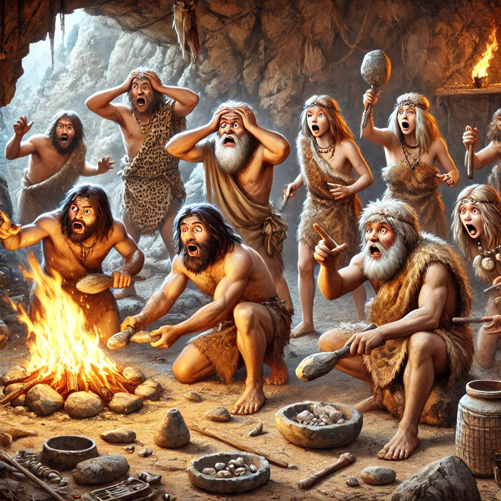

High-Frequency Events in Human History
May 09, 2024

High-Frequency as a Criteria for Evaluating Causes of Human Development
I listened to a podcast with Dr. Richard Wrangam, who discussed (with appropriately low epistemic confidence) the idea that the act of sharpening stone tools (which produce sparks) could have been the precursor to the discovery of fire. An explanation like this is obviously difficult to empirically support, as Dr. Wrangam was well aware. But, pointing to stone tool sharpening as a cause of fire discovery does have some characteristics that make it plausible, namely:
(1) human ancestors likely engaged in the action, and
(2) it would have been a highly frequent event.
^ I found point 2 pretty fascinating: that anthropologists use "high frequency" as a benchmark for evaluating the hypothetical cause of some human event (e.g., control of fire). The logic makes a lot of sense. If human development is a noisy, probabilistic chain of events, then high-frequency events are more likely to have been the cause of major developments. Accidentally igniting some twigs (via tool sharpening) might go unnoticed if it only happens once; repeating the event hundreds of times will lead to a discovery that eventually becomes a stable feature of a given culture.
Extending the Logic to the Development of Civilization
It seems like we can extend this logic to the development of civilization -- in particular:
- language
- writing
- agriculture
- money
- government
- etc
^[your definition of "civilization" may not include those things, but bear with me]
Whatever caused those things to be discovered was probably a high-frequency event that would have been repeated enough times to lead to a later development. For example, imagine our ancestors pulling up sprouts to consume. In many instances, the roots of the sprout will still have the seed attached. Seeing that over and over again (and generalizing that that's the same seed that came from a fruit) would have happened enough times to pass anthropologists' "high-frequency" check.
What does the High-Frequency Check Imply?
I don't have any good sense of what causes civilization, and I don't have a background in anthropology. But what's relevant for this post is the premise that high-frequency events are the likely causes of civilization development. That is, the development of civilization happened because a bunch of high-frequency events had enough time to trigger the cascade of events that led to cultural evolution. But that seems to imply something else: that civilization advancement is inevitable.
The logic goes as follows: a semi-intelligent species is navigating through their local environment, performing a large number of interactions with their ecosystem and eachother. They're constantly being bombarded with signals about how the natural world can be exploited (giving them a comparative advantage over other organisms as well as their previous selves) -- each signal chips away at the probability of maintaining the current equilibrium. If it's the case that the environment is filled with these signals, and we're biologically wired to exploit our environment, then it's unlikely that civilization can resist advancing.
So what?
In some ways, this is just rephrasing something rather obvious (and somewhat tautological): civilization evolved because it evolved. There isn't a whole lot of insight here. But, it does start to make historical development seem less serendipitous -- though that's not to say that circumstantial events can't have a huge influence on the direction civilization moves towards^[e.g., the various nuclear close calls]. Believing this doesn't necessarily come with much predictive power; just because you know why doesn't mean you know how. But I guess this post can provide advice to a time traveler trying to prevent our civilization's development: you can make it take longer, but we'll get there eventually.